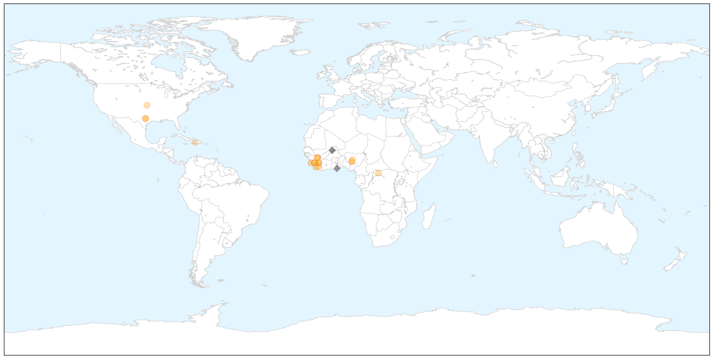

Ebola
30-Day Web Trend
0 alerts, 0 warnings

30-Day Twitter Trend
0 alerts, 0 warnings

Article Locations

X

Article Confidences

Top Articles:
- 0.999
- Mystery 'post-Ebola syndrome' emerges in West Africa
- 0.999
- Ebola case hints sex unsafe indefinitely
- 0.999
- Senegal Confirms Country's First Ebola Case
- 0.999
- Ebola Survivors Should Use Condoms Indefinitely, CDC Says
- 0.998
- 5 months after infection, man spreads Ebola via sex
- 0.998
- Man spreads Ebola via sex 5 months after infection
- 0.997
- Five Months Following Infection Ebola Can Spread Through Sex
- 0.985
- 'I dare not start crying at the moment, because I don’t know when I will be able to stop'
- 0.970
- Health-care workers face threats around world
- 0.918
- Review: ‘Frontline’ Looks at Missteps During the Ebola Outbreak
- 0.917
- Fiancee of Ebola victim hopes memoir closes chapter
- 0.889
- Outgoing Minister Thanks Health Care Workers
- 0.829
- Nigeria ends 9th month without a case of Wild Polio Virus, Minister lauds health workers
- 0.721
- Sierra Leone university holds ceremony amid Ebola fears
- 0.698
- Doctors: Nepal's Health System at Breaking Point -- LONDON, May 3, 2015 /PR Newswire UK/ --
- 0.683
- Minister Tasks Workers on Teamwork
- 0.609
- Vaccination in Africa: Angola, Mozambique biggest gainers; Zambia and Kenya see 'mysterious' decline
- 0.589
- IS MEDECINS SANS FRONTIERES SUPERSEDING THE UN’S HUMANITARIAN AGENCIES?
- 0.557
- S/Leone university in first graduation since Ebola
Top Tweets:
- 0.840
- RT: For the week ending today SierraLeone recorded 7 new confirmed Ebola cases and 7 deaths. The lowest since The outbreak a…
- 0.761
- Review: 'Frontline' Looks at Missteps During the Ebola Outbreak - New York Times http://t.co/8KZT49lVWV ebola EVD
- 0.729
- Guinea reported 22 confirmed Ebola cases in the week to 26 April compared with 19 cases the previous week. EbolaResponse
- 0.699
- RT: Guinea reported 22 confirmed Ebola cases in the week to 26 April compared with 19 cases the previous week. EbolaResponse
- 0.667
- What Happens To A Country When An Outbreak Of Ebola Ends? - NPR (blog) http://t.co/9hI8zEchfo ebola EVD
- 0.661
- Solar-powered vaccine fridges help Ebola fight - BBC News http://t.co/rAush0uLuW ebola EVD
- 0.519
- Report: 5 months after infection man spreads Ebola via sex - KABC-TV http://t.co/kxNPMVD9ID ebola EVD
- 0.507
- On 9 May 42 days will have elapsed since burial of last Ebola case in Liberia. Vigilance is being maintained throughout. EbolaResponse